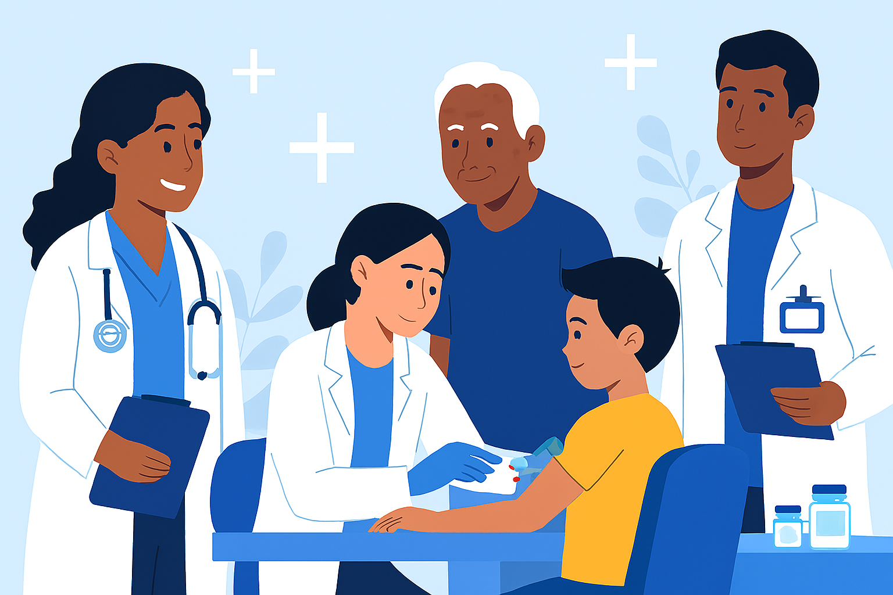
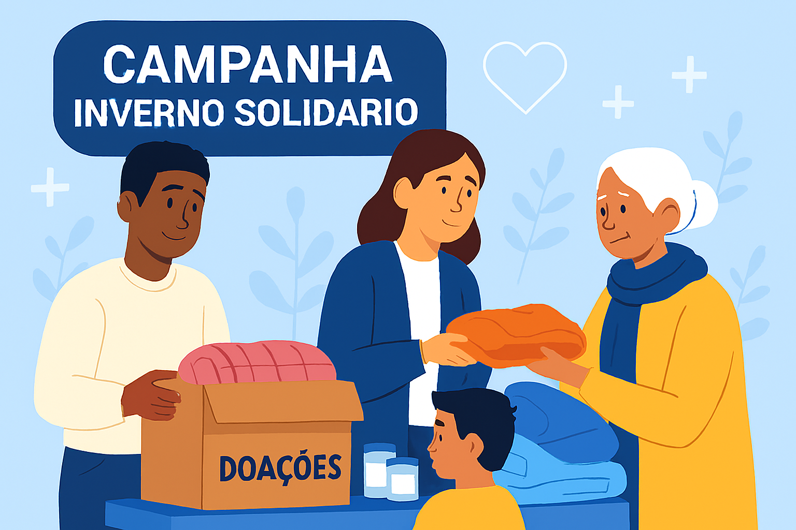

Educação Digital
Curso de introdução à tecnologia para jovens.
Curso de introdução à tecnologia para jovens.

Atendimentos básicos e campanhas de vacinação.
Descubra oportunidades e candidate-se para contribuir.
Para se inscrever, acesse a página de cadastro.

Acompanhe metas e progresso em tempo real na campanha.